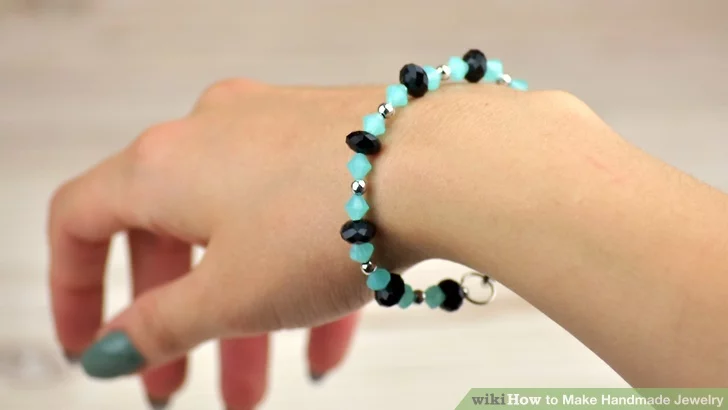

|
step 1 :
Try making a beaded bracelet. A simple beaded bracelet is a great way to begin making handmade bracelets. For this bracelet you will need beads of your choosing, beading wire, wire cutters, crimp beads, jump rings, and a closing clasp.
|
 |
step 2 :
Add beads to your bracelet wire. Begin by stringing your beads onto the wire still attached to the spool. Keeping the wire attached to the spool allows you to change your mind about the length of the bracelet as you make it. Keep stringing on beads until you make the bracelet as long as you like.[8]
|
|
step 3 :
Determine your bracelet length. Figure out how much length the clasp and jump ring are going to add to your final product bracelet, take that into consideration, and remove some beads equivalent to that length.[9]
|
|
step 4 :
Add a jump ring to an end of your bracelet. Add on a crimp bead and a jump ring to the end of your bracelet. Leave yourself a bit of room on the end of the wire. Take the tag end of the wire and thread it back through the end crimp bead. You want the jump ring to be dangling on the wire loop.
|
|  |
step 5 :
Secure an end to your bracelet. Keep threading the wire through the rest of the beads until the jump ring is pulled taut against the wire. Use your crimping pliers to clamp down on the crimp bead and secure the crimp bead.
You can also trim away the excess wire near the crimp bead so you don’t get poked. Repeat this process with the other side of bracelet.
Add a clasp to an end of the bracelet. Add a clasp onto one of the end jump rings by using pliers to twist and open a jump ring, and then feed the clasp onto the ring. Close the jump ring, and connect your bracelet together.
This same technique can be used with longer wire and more beads to make a simple necklace.
|